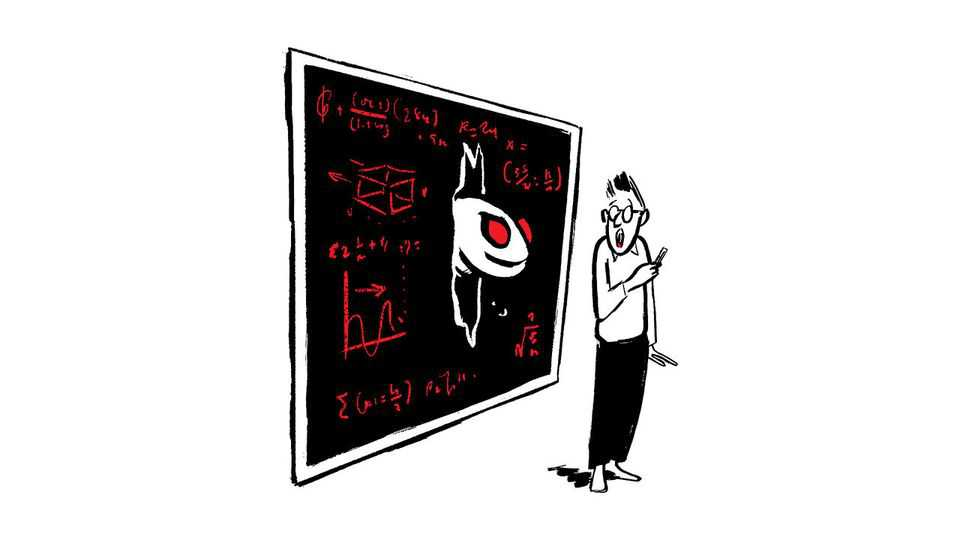
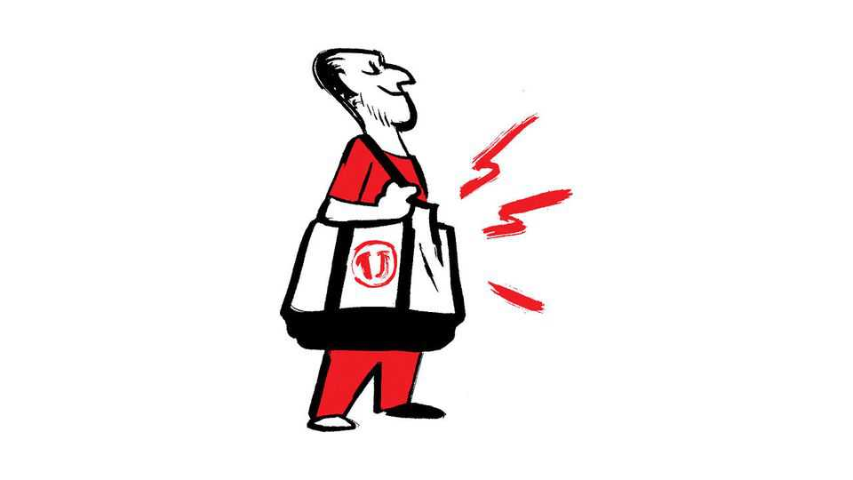

What does OpenAI’s progress mean for scientists?
Also this week, Mark Carney, competition from China, tote bags, baldness

Oct 29th 2026
Letters are welcome via email to letters@economist.comFind out more about how we process your letter
Mathematicians are still attempting to fathom what the announcement of OpenAI’s progress on the Navier-Stokes problem means for us (“The end of mathematics?”, October 17th). In Britain mathematics research receives tens of millions of pounds in funding annually and mathematical sciences are estimated to contribute nearly £500bn ($670bn) to the economy a year. Hence it is important to have an informed public conversation about the interplay between the health of the mathematics community, the role it plays in society and the impact AI will have. One compelling proposal for a future structure of the field comes from Terence Tao’s lecture at the International Congress of Mathematicians in July and subsequent writings, where “Math 2.0” moves away from valuing just theorem-proving to valuing exposition and community building.
Professor Tao, who had been openly positive about using ChatGPT for research, has now reposted a call for mathematicians to stop working with OpenAI. The term “mathpocalypse” is being bandied around. I remain broadly optimistic about the potential for accelerated science, but concerned about the lack of transparency and access. Undeniably mathematics will be changed, and ensuring that those changes are positive requires informed public debate now.
Dr Linden Disney-HoggAI in science, postdoctoral fellowDepartment of MathematicsImperial College London
You quote Álvaro Lozano-Robledo describing OpenAI’s announcement that it had solved the Navier–Stokes existence and smoothness problem as “possibly the single most important day in the history of mathematics thus far”. I would consider it the second most important discovery in mathematics, after the discovery of calculus by Newton and Leibniz in the 17th century. Their mathematical models enabled humanity to predict the future by identifying the model parameters governing evolution of a natural system from a measured present state.
Yet predicting and building the future has worked well only with linear or almost linear systems, because they have unique (predictable) solutions. Much of existence, however, is governed by nonlinear differential equations, where solutions can be exquisitely sensitive to initial conditions and parameters. Consider the Navier–Stokes equations applied to atmospheric motion: the resulting complexity limits the accuracy of weather forecasts. Complexity brings unpredictability, but also the possibility of emergent behaviour and creativity.
Now humanity stands on the threshold of the second transformation. AI, being a complex nonlinear system itself, will provide powerful new tools for “dismal” sciences such as biology, economics, medicine and sociology, helping them develop more predictive, rigorous and testable theories. Although AI will not magically eliminate uncertainty or guarantee solutions to nonlinear equations, it may help us identify the conditions under which solutions exist, understand their behaviour and design control systems that avoid singularities and instability.
I am exhilarated to be alive at a time when Homo sapiens may acquire new tools to avert its own annihilation, whether individual or collective.
Dushan BoroyevichProfessor emeritusVirginia TechBlacksburg, Virginia
The recent slew of AI maths papers is dominated by mechanistic, iterative methods backed by vast amounts of compute; no more flashes of paradigm-shifting insight. This change will be familiar to engineers of a certain age. Modern engineering opinions are backed by a similar digestion of a problem into umptillions of simpler, tractable units. Techniques such as finite element analysis have replaced the elegance of Timoshenko and Prandtl (unless, perhaps, you are still in the classroom). They are also quicker and cheaper.
The machines always provide an answer, to absurd levels of precision, backed by very convincing maps. The art now is deciding if you asked the right question, and thus whether the answer is nonsense.
Jim KingstonPerth, Australia
Some scientists “envisage a future in which AI models…close the scientific loop”. That will be when university departments consist entirely of AI/LLM faculty. Senior full-professors’ AIs will evaluate the work of junior assistant-professors’ AIs and decide whether it is good enough to merit promotion and tenure.
Avinash Dixit(Human) emeritus professorPrinceton UniversityPrinceton, New Jersey
Mark Carney has indeed shown calm resilience as Canada’s prime minister and provided leadership for other mid-size countries (“Not sorry”, October 17th). His emphasis on economic growth is welcome after ten years of woke stagnation under Justin Trudeau. But the glaring flaw in Mr Carney’s policies is that his party is still overspending wildly, and most of all government spending is benefiting his voter base of wealthy senior homeowners. Meanwhile, our younger citizens struggle with low economic growth, crippling taxes, high inflation and interest, and rapidly increasing government debt. None but a privileged few of our youth can afford a home. We share the same geographic space, but economically speaking old and young Canadians live in different countries.
Unless Mr Carney does something drastic for our young people he will open the door for a firebrand populist to wreak havoc.
Phil WebbVancouver
Characterising Mr Carney as some kind of national saviour overlooks important domestic realities. For instance, his scrapping of an unpopular consumer carbon tax merely shifts the financial burden onto large industrial emitters. These costs will inevitably be passed back to the consumer through higher prices. Similarly, his vow to build a pipeline between Alberta and the west coast owes a great deal to the intense lobbying of Alberta’s provincial government, not to Mr Carney championing the project from day one. The path forward is fraught with obstacles; resource infrastructure remains a deeply polarising issue in Canada.
Accountability remains a concern. Mr Carney was absent from 74% of parliamentary question periods since taking office in April 2025 to July this year. He may have missed as many as 64 of those sessions even while physically present in Ottawa.
Gary ShepherdsonCalgary
I was amused to find my country described as a “limping moose” in your briefing (“A new leaf”, October 17th). The top four North American cities in the EIU’s index of most liveable cities are Vancouver, Toronto, Calgary and Montreal. I am happy to call Saskatoon my home, where a moose once limped into an elementary school (it was tranquillised and released into the wild).
Ward WurtzSaskatoon, Canada
European industry may be doing better than people think, but the threat from China is not overblown (“Glimmers of hope”, October 3rd). Relying on a strategic rival for critical materials and technologies in foundational industries such as energy can imperil an entire economy. Cheaper imported components may help individual manufacturers, but erode Europe’s capacity to produce the technologies that underpin its economies.
Batteries are a case in point. China produces up to 85% of certain components and 90% of key raw materials for electric-vehicle batteries. Almost all batteries used in electricity grids depend on China at some stage of their supply chain. This concentration leaves Europe exposed to disruption and coercion across energy, transport, industry, data centres and defence. The price of an imported battery does not capture that economic and security cost. Losing factories also means losing suppliers, skills and the process know-how that drives innovation.
Europe must safeguard strategic industries against unfair competition and excessive dependence, and diversify supply through trusted international partnerships.
Albéric MongrenierExecutive directorEuropean Initiative for Energy SecurityBrussels

The craze for Trader Joe’s tote bags is not really that strange (“Dress code”, October 10th). Humans will pay for a badge of belonging. We spend our lives seeking tribes: families, neighbourhoods, nations, religions, political parties and, increasingly, brands. The boundaries are fluid. A $2.99 tote, a designer handbag and a multimillion-dollar yacht differ in price, but not necessarily in purpose. Each can signal membership, status or acceptance. Marketers haven’t invented this instinct; they’ve merely learned to put a price tag on it.
GARY BLUMNew York
It’s not just bakeries and book shops that sell tote bags. Foreign Policy, a publication of note, offers its own to readers who sign up. Being an “insider” is itself a status signifier, no need to tell The Economist that. We are movers and shakers in global politics; carrying an “ultra-durable” tote is surely the best way to signal that status to the broader public.
NAREG SEFERIANPhnom Penh
Did The Economist have to sink so low as to make John Healey’s baldness a totemic reason for his apparent failures as Britain’s chancellor of the exchequer (Bagehot, October 24th)? How hirsute is Bagehot and does he take pride in his follicle-driven insults? Think, too, of a more promising correlation between a recent prime minister’s pilose head and his leadership shambles. Perhaps it would be sensible for Bagehot to leave the grooming tips to the lifestyle section.
This from a happily bald and reasonably intelligent, long-time reader of your weekly economic therapy bible.
Professor Jay MitraResearch fellowResearch Centre for EntrepreneurshipLeuphana UniversityLüneburg, Germany